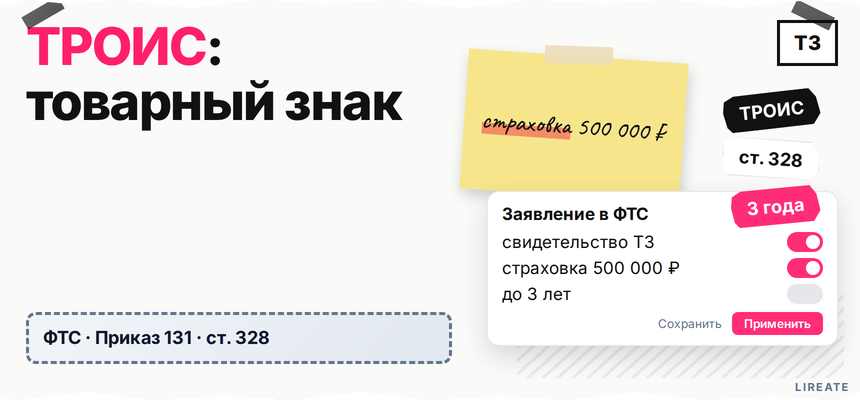
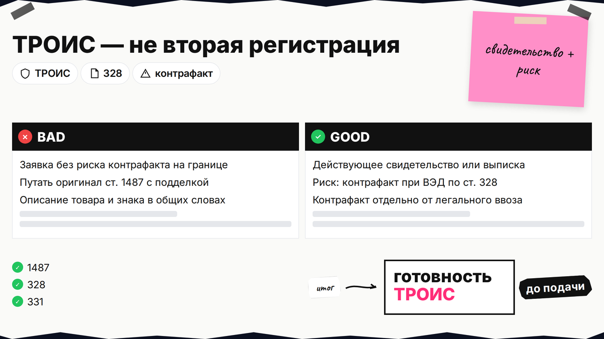
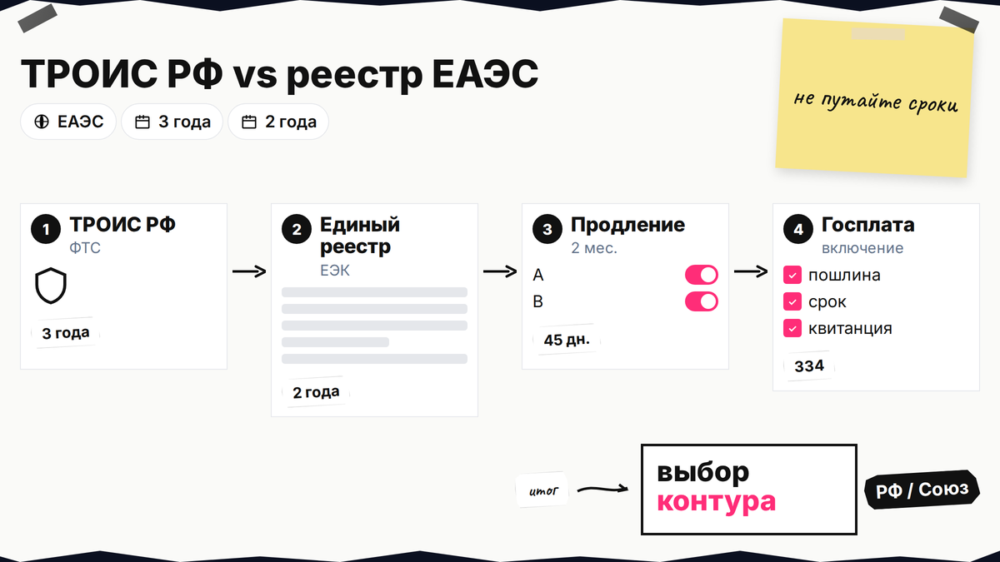
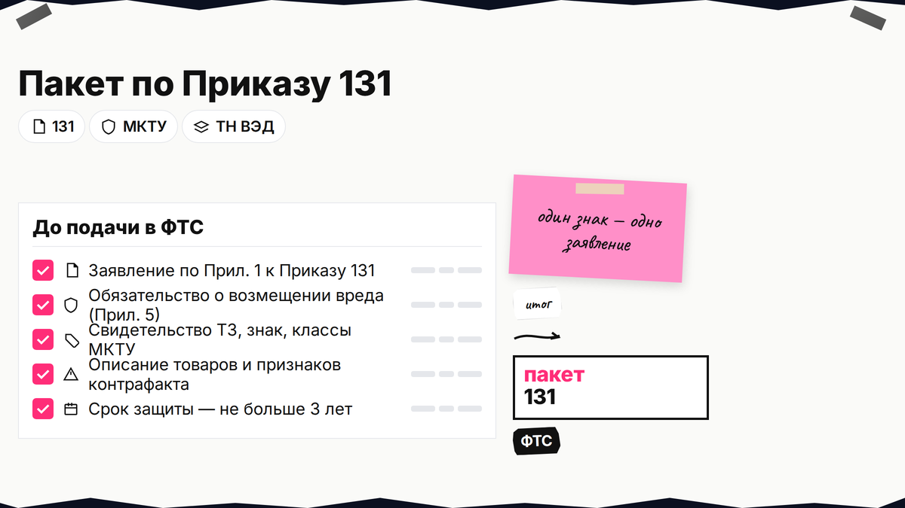

На границе уже видят ваш знак на чужой коробке, а без записи в таможенном реестре ФТС (ТРОИС) инспектор не обязан откладывать выпуск. Включение товарного знака в таможенный реестр ФТС даёт окно на приостановление по ст. 124 ТК ЕАЭС. Ниже вы проверите предпосылки, разберёте ТРОИС РФ и реестр ЕАЭС, соберёте пакет и пройдёте страховку. Нормы на 13.11.2026; не заменяет консультацию поверенного.

TL;DR / Быстрый инсайт: ТРОИС - это таможенный реестр объектов интеллектуальной собственности ФТС России. Один товарный знак - одно заявление по ст. 328 ФЗ "О таможенном регулировании". За само включение в национальный реестр плата не взимается (ст. 334). После решения о включении нужны страховка от 500 000 ₽ и подписанное обязательство о возмещении вреда при ложном приостановлении. Срок таможенной защиты в РФ - до 3 лет за период; в едином реестре ЕАЭС - до 2 лет. Таможня не блокирует легальный ввоз оригинала по ст. 1487 ГК РФ.
Частая ошибка: путают 2 года (единый реестр ЕАЭС) с 3 годами (ТРОИС РФ) и ждут, что реестр заменит свидетельство в Роспатенте. Сначала регистрация - L01 и L30; затем ТРОИС.

ТРОИС - не "вторая регистрация" знака, а дополнительный контур для таможни. Нужно действующее свидетельство (или выписка из госреестра ТЗ) и конкретный риск: есть основания полагать, что при ввозе, вывозе или иных операциях под контролем таможни нарушат ваши права (п. 1 ч. 1 ст. 328).
Делайте: отделить контрафакт (подделка маркировки, "серый" товар со знаком без прав) от оригинальной партии, введённой в оборот вами или с согласия - по ст. 1487 ГК РФ. Не делайте: подавать заявление "на всякий случай" без описания товаров и признаков нарушения - ФТС откажет при недостоверных сведениях (ст. 331).

Схема двух реестров:
Свидетельство ТЗ в РФ → заявление в ФТС России → ТРОИС (до 3 лет за период) → приостановление на границе РФ
Нужна защита в ЕАЭС → заявка в уполномоченный орган государства → единый реестр ЕЭК (до 2 лет) → меры на границах Союза по гл. 52 ТК ЕАЭС
| Параметр | ТРОИС (РФ, ФТС) | Единый реестр ЕАЭС |
|---|---|---|
| Куда подавать | ФТС России (бумага или электронный документ) | Уполномоченный орган гос-члена → ЕЭК |
| Срок защиты за период | До 3 лет (ст. 329) | До 2 лет (Регламент к Решению Коллегии ЕЭК № 35) |
| Продление | Заявление не менее чем за 2 месяца до конца срока | Обращение за 45 рабочих дней |
| Госплата за включение | Не взимается (ч. 2 ст. 334) | Не взимается (Регламент № 35) |
| Объект L56 | Товарный знак (свидетельство, МКТУ, образ товара) | ТЗ + выписка, международная охрана при необходимости |
Делайте: для ввоза только в РФ начните с ТРОИС. Не делайте: путать этот путь с патентной блокировкой аналога - там другой объект и логика, см. сравнение патента и ТЗ в L31.
Если контрафакт идёт через маркетплейсы, параллельно готовьте претензии по L27: таможня и площадка закрывают разные каналы, но описание знака и товара в заявлении ФТС должно совпадать с тем, что вы потом доказываете в сети.

Опора - ст. 328 и Приказ ФТС от 28.01.2019 № 131 (форма заявления - Прил. № 1). На один знак - одно заявление (ч. 4 ст. 328).
Заявление принимают на бумаге или как электронный документ (ч. 1–2 ст. 328). Каналы: услуга на Госуслугах, электронный обмен по Приказу ФТС № 666, либо бумага в ФТС. Карточка реестра: реестр ТРОИС (TKS).
| Этап | Срок по закону | Что сделать |
|---|---|---|
| Рассмотрение заявления | Не более 1 месяца с даты поступления | Дождаться решения или запроса документов |
| Ответ на запрос ФТС | 5 рабочих дней (ч. 21 ст. 328) | Представить документы, иначе приостановят до 1 месяца |
| Общий срок с продлением | Не более 3 месяцев (ч. 16–17 ст. 328) | Не затягивать ответы на запросы |
| Уведомление о решении | 3 рабочих дня (ч. 11 ст. 328) | Зафиксировать дату - от неё считается месяц на страховку |
После решения о включении нужна страховка риска ответственности: сумма не менее 500 000 ₽ (ч. 13 ст. 328), полис - в течение 1 месяца с уведомления (ч. 14). Обязательство о возмещении вреда (ч. 6) подписывают ещё до подачи. Делайте: держать черновик полиса заранее. Не делайте: считать решение ФТС финалом - без страховки запись не действует (ч. 3 ст. 334).
Срок в заявлении - до 3 лет за период, но не дольше охраны знака (ст. 329). Продление - заявление за 2 месяца до конца срока. Делайте: напоминание в календаре и проверка записи на реестре ТРОИС. Не делайте: игнорировать обновление данных по ст. 332 - иначе исключение (ст. 333).
По ст. 124 ТК ЕАЭС выпуск приостанавливают на 10 + 10 рабочих дней; за это время заявляют меры по ст. 1252 ГК РФ. Онлайн-контур - L27; патент vs ТЗ - L31.
Импорт с Честным знаком и брендом: L22.
Кратко опишите задачу: контрафакт на границе, сбор пакета в ФТС или продление ТРОИС. Подскажем порядок по 289-ФЗ и ГК РФ.
Материал проверен: редакция Лирейт, практика по товарным знакам и таможенной охране ОИС.
Достоверность данных: ст. 328–334 ФЗ "О таможенном регулировании", ст. 112 289-ФЗ, ст. 124 ТК ЕАЭС, ст. 1252 и 1487 ГК РФ сверены с открытыми текстами на 13.11.2026; сроки ТРОИС (до 3 лет) и единого реестра (до 2 лет) разведены по официальным редакциям НПА.
Госпошлина за включение в ТРОИС не взимается (ч. 2 ст. 334 289-ФЗ). Платите за подготовку пакета, представителя при необходимости и страховку от 500 000 ₽ после решения о включении.
ТРОИС РФ - до 3 лет за период (ст. 329). Единый реестр ЕАЭС - до 2 лет по Регламенту ЕЭК № 35.
Нет. По ч. 4 ст. 328 289-ФЗ одно заявление подаётся на один объект интеллектуальной собственности. На семейство брендов оформляют отдельные заявления и, при необходимости, отдельные полисы страхования.
Нет, если товар оригинальный и право на знак исчерпано: введён в оборот владельцем или с его согласия (ст. 1487 ГК РФ). Реестр нацелен на контрафакт и нарушения, а не на блокировку легальной серой или параллельной партии оригинала.
Без договора страхования с суммой не менее 500 000 ₽ включение в реестр не завершается (ч. 13–14 ст. 328, ч. 3 ст. 334). Просрочка - типичное основание отказа или последующего исключения записи (ст. 331, 333). Отсчёт месяца начинается с даты уведомления о решении (ч. 11 ст. 328), поэтому зафиксируйте её в журнале в тот же день.
Приостановление выпуска - 10 рабочих дней с возможным продлением ещё на 10 рабочих дней по вашему обоснованному запросу (ст. 124 ТК ЕАЭС). Это срок на заявление мер защиты, а не бессрочный запрет.
L31 - патент и параллельный импорт; здесь - workflow включения товарного знака в ТРОИС, страховка и приостановление по знаку.